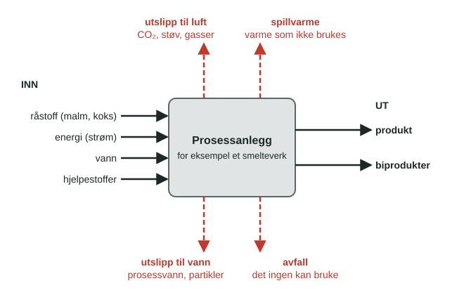

Utslipp og ressursbruk i prosessindustrien
Før du kan foreslå et miljøtiltak, må du vite hvor problemet er. Her ser du hva som går inn og ut av et prosessanlegg, og hvor utslippene og tapene kommer fra.
Alt som går inn, må komme ut
I et prosessanlegg forsvinner ikke stoff og energi. Alt som går inn, kommer ut igjen på en eller annen måte. Bare en del av det blir produktet vi vil selge. Resten blir biprodukter, utslipp, avfall og varme. Dette er det samme prinsippet som i en masse- og energibalanse, som du lærer om i Fysiske prinsipper.

Miljøarbeid handler om å få mest mulig av det som går inn, til å bli produkt eller biprodukt, og minst mulig til å bli utslipp, avfall og spillvarme.
Klimagasser
En klimagass er en gass som holder på varmen i atmosfæren, slik at jorda blir varmere. Den viktigste er karbondioksid, CO2. Industri og bergverk står for rundt en firedel av klimagassutslippene i Norge.
CO2 kan komme fra to ulike kilder i et anlegg:
- Energi: CO2 fra å brenne olje, gass eller kull for å lage varme eller damp. Utslippet kan kuttes ved å bruke strøm fra vannkraft eller annen fornybar energi.
- Selve prosessen: CO2 som kommer fra råstoffene og reaksjonene som lager produktet. Dette kalles prosessutslipp. Det forsvinner ikke selv om all strøm er fornybar.
Prosessutslipp i et smelteverk
I et smelteverk blir metalloksidet i malmen gjort om til metall. Til det brukes karbon, for eksempel koks, som reduksjonsmiddel. Karbonet tar oksygenet fra metalloksidet. Forenklet, for manganoksid:
\[ \ce{MnO + C -> Mn + CO} \]
Karbonmonoksidet (CO) i ovnsgassen brenner videre til CO2. Karbonet i koksen ender altså som CO2. Norske smelteverk bruker strøm fra vannkraft, så nesten all CO2 fra et norsk smelteverk er prosessutslipp. Derfor er det vanskelig å kutte: man må enten bytte reduksjonsmiddel eller fange CO2-en.
Også kalkstein, som brukes som slaggdanner, gir CO2 når den varmes opp:
\[ \ce{CaCO3 -> CaO + CO2} \]
Dette er også den største kilden til CO2 når det lages sement.
Regneeksempel
Oppgave: Tenk deg at en smelteovn bruker 300 kg karbon for hvert tonn metall den lager. Hvor mye CO2 blir det per tonn metall, hvis alt karbonet ender som CO2?
Løsning:
- Hvert karbonatom (C) blir til ett CO2-molekyl. Molar masse: C = 12 g/mol og CO2 = 44 g/mol.
- Det betyr at 12 kg karbon gir 44 kg CO2. Massen blir \( \frac{44}{12} \approx 3{,}67 \) ganger så stor.
- \( 300 \text{ kg} \cdot \frac{44}{12} = 1100 \text{ kg} \)
Svar: Ovnen slipper ut omtrent 1,1 tonn CO2 for hvert tonn metall. CO2-en veier mer enn karbonet fordi den også inneholder oksygen.
Tallene i eksempelet er tenkte. Hvor mye karbon som trengs, varierer med metall, råstoff og ovn.
Andre utslipp
I tillegg til CO2 kan et anlegg slippe ut støv, svoveldioksid (SO2), nitrogenoksider (NOx), tungmetaller og forurenset prosessvann. Hvordan disse utslippene til luft, vann og jord blir målt og renset, står på siden Utslipp og miljøprøver i HMS.
Ressursbruk
Miljøbelastningen handler ikke bare om det som slippes ut, men også om det som brukes:
- Råstoff: Malm og fossilt karbon er ikke fornybare. Når de er brukt, er de borte. Gruvedrift setter også spor i naturen der malmen hentes.
- Energi: Et smelteverk bruker svært mye strøm, like mye som mange tusen husholdninger. Strøm som brukes i industrien, kan ikke brukes til andre ting.
- Vann: Store mengder vann brukes til kjøling og i prosessen. Det må tilbake til naturen i god stand.
- Spillvarme: En stor del av energien forlater anlegget som varme i kjølevann og avgass, uten å bli brukt.
Ovnsgass fra smelteverk inneholder mye karbonmonoksid (CO). CO er giftig, og du kan verken se eller lukte den. CO er også brennbar og kan danne eksplosive blandinger med luft. Følg alltid bedriftens regler for gassmåling og verneutstyr når du jobber nær ovner, gassrør og filtre.
Som laborant analyserer du prøver av råstoff, produkt, slagg og utslipp. Tallene dine viser hvor mye av råstoffet som blir produkt, og hvor mye som går tapt. Som operatør ser du det samme i kontrollrommet: høyt strømforbruk eller mye støv kan være tegn på at noe er galt i prosessen.
Test deg selv
1. Hva er en klimagass?
- En giftig gass som brukes i prosessen
- En gass som holder på varmen i atmosfæren, slik at jorda blir varmere
- En gass som renser luften
CO2 er den viktigste klimagassen. Den er ikke giftig i små mengder, men den bidrar til at klimaet endrer seg.
2. Hva er et prosessutslipp?
- Utslipp fra bilene som kjører til og fra anlegget
- Utslipp fra å brenne olje for å lage varme
- Utslipp som kommer fra råstoffene og reaksjonene som lager produktet, og ikke fra brensel som brennes for å lage energi
Prosessutslipp forsvinner ikke om man bytter til fornybar energi, fordi de kommer fra selve prosessen som lager produktet.
3. Hvorfor slipper et norsk smelteverk ut CO2, selv om det bruker strøm fra vannkraft?
- Karbonet som brukes som reduksjonsmiddel, ender som CO2
- Vannkraft gir store utslipp av CO2
- Metallet reagerer med lufta og lager CO2
Karbonet tar oksygenet fra malmen og blir til CO og deretter CO2. Det er et prosessutslipp.
4. En ovn bruker 600 kg karbon per tonn metall. Omtrent hvor mye CO2 blir det per tonn metall?
- 0,6 tonn
- 1,1 tonn
- 2,2 tonn
\( 600 \text{ kg} \cdot \frac{44}{12} = 2200 \text{ kg} = 2{,}2 \text{ tonn} \). Dobbelt så mye karbon som i regneeksempelet gir dobbelt så mye CO2.
5. Hva er spillvarme?
- Varme som trengs for å smelte råstoffet
- Varme som går ut av anlegget uten å bli brukt
- Varme som selges som strøm
Spillvarme forlater anlegget med kjølevann og avgass. Den kan ofte brukes om igjen. Det ser du på neste side.
Ordliste
| Begrep | Forklaring | Engelsk |
|---|---|---|
| utslipp | Stoffer som slippes ut fra en prosess til luft, vann eller jord. | emission / discharge |
| klimagass | En gass som holder på varmen i atmosfæren, slik at jorda blir varmere. Den viktigste er CO2. | |
| prosessutslipp | Utslipp som kommer fra råstoffene og reaksjonene som lager produktet, og ikke fra brensel som brennes for å lage energi. | process emissions |
| reduksjonsmiddel | Et stoff som reduserer et annet stoff. I smelteverk er det karbon, som tar oksygenet fra metalloksidet så det blir metall. | |
| spillvarme | Varme som går ut av et anlegg uten å bli brukt, for eksempel med kjølevann eller avgass. | waste heat |
Les mer
- Fra råstoff til produkt: hvordan malmen blir til metall.
- Utslipp og miljøprøver i HMS.
- På norskeutslipp.no viser Miljødirektoratet hvor mye hver bedrift i Norge slipper ut.
Om kildene: Teksten, eksemplene og figurene på denne siden er laget for dette nettstedet. Siden bygger på undervisningsopplegg i kjemiprosess- og laboratoriefag ved Sauda vgs, som er utarbeidet med utgangspunkt i blant annet Kjemien stemmer, Laboranten og åpne nettkilder.